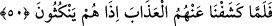
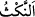

50. Fakat biz onlardan azâbı kaldırınca, sözlerinden dönüverdiler.
“Fakat biz onlardan” Mûsâ’nın duâsıyla “azâbı kaldırınca” hemen “sözlerinden
dönüverdiler;” küfür ve inkârlarına dönüp onda ısrar ettiler.
“/neks” aslında ip, örgü ve benzeri şeyleri bozup çözmektir. Burada mecâzen ahdi
bozma için kullanılmıştır. Mânâ şöyledir: Verdikleri hidâyet ve îman sözünü derhal
bozdular. Süratle sözlerini bozmaya koştular ve bunu hiç ertelemediler. Derhal
inkârlarına dönüp bunda ısrar ettiler. Verdikleri bu sözlerinde durmayıp ahidlerini
bozunca da Allah tarafından lânetlendiler. İşte bu lânetlenmenin sonucu olarak
boğulmaya mahkum edildiler ki bu konu ileride gelecektir. Öyleyse akıllı insan ahde
vefâ etmeli, sözünde durmalıdır.
Hikâye edildiğine göre Arap krallarından Numan b. Münzir her sene kendisi için bir
uğurlu bir de uğursuz gün tayin ederdi. Tespit ettiği uğurlu günde karşısına çıkan ilk
adama yüz deve verir, daha bir takım hediyeler takdim ederdi. Uğursuz günündeyse
karşısına çıkan ilk adamı öldürtürdü. İşte böyle uğursuz gününde karşısına güçlü bir
adam çıktı. Adam öldürüleceğini anladı ve şöyle dedi: “Allah kralımıza ömür versin.
Elbette ben bir ihtiyaç ve zarûretten dolayı böyle bir günde dışarı çıkmış bulundum.
Ancak öldürülmemin sabah yahut akşam olması da pek bir şeyi değiştirmez. Şâyet kral
hazretleri izin verirlerse âile ve çocuklarıma bir miktar azık, yiyecek vesâire götüreyim
ve onlarla vedâlaşıp tekrar döneyim” dedi.
Kralın bu durum karşısında kalbi yumuşadı. Ancak bu işin kefâletle olabileceğini,
dönmediği takdirde kefilin öldürüleceğini söyledi. Aralarından Şerik b. Ali “ben
kefilim” dedi. Adam gitti. Sonra akşama yakın döndü. Kral adamı görünce başını eğdi,
sonra başını kaldırıp şöyle dedi: “Ben sizin ikiniz gibisini hiç görmedim. Sen ey güçlü
adam vefada emsalsiz bir örnek sergileyip bu konudaki en üstün makamı elde ettin.
Artık bunun ötesinde vefâ konusunda övünülecek bir makam yoktur. Ey Şerik sana
gelince sen de bu konuda canını riske atarak muazzam bir cömerdlik ve kararlılık örneği
sergiledin. Şimdi ben bu üç kişinin en cimrisi olmayacağım. Biliniz ki ben sizin
hayrınıza insanların üzerinden bu uğursuz günü kaldırdım.”
Sonra bu güçlü adama, “seni bu denli sadâkat ve vefâ ehli olmaya sevkeden nedir?”
diye sordu. Adam “dinimdir” dedi ve ekledi: “Vefâsı olmayanın dîni olmaz.”
Dolayısıyla anlaşıldı ki vefâ kurtuluş sebebidir.
Mesnevi’de şöyle denilmektedir.
Vefa toprağına bir yudumcuk olsun döken kimseden
Devlet avı nasıl kaçabilir?